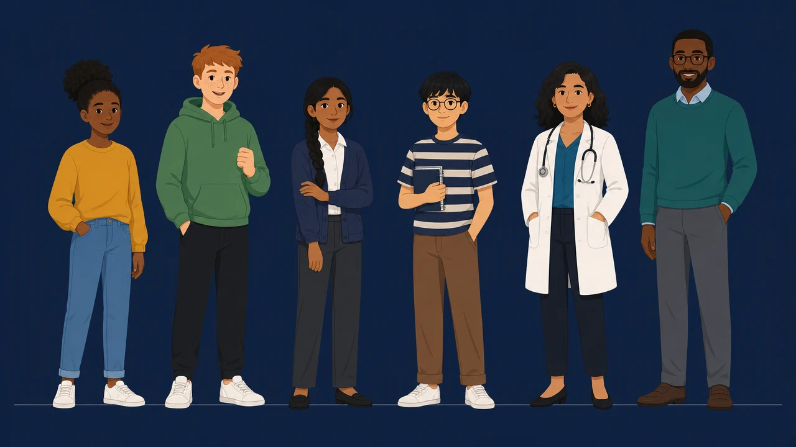

De Engelse cast in code
Getekend naar castvel 1 (de ElevenLabs-still eronder). Kies een houding, zet de contourlijnen aan of uit, en kijk hoe ze lopen en rennen. Rollen en namen: personages/en/CAST.md.

Lopen en rennen
Van opzij, met de gangmotor van het castboek: de steunvoet staat stil op de grond.